| Student | Aliaidar Abilmansur (24B030978) |
| Practice group | Tuesday 16:00–19:00 |
| Date of work & verification | November 7, 2026 |
| AI assistant used | Claude Code (Anthropic) — model Claude Opus 5.5, used in the terminal with read/write access to the project folder only |
| Starting point | Assignment #03 prototype (Room 304 — Innovation Lab, Bolt.new v2 + booking.py). The Bolt.new TypeScript project lives only in the Bolt workspace, so — as the brief allows — an equivalent minimal version was reconstructed as plain HTML/JS together with the original booking.py and its 22 tests (tag v1-baseline). |
| Source code | Git repository smart-campus-a4 (attached as Aliaidar Abilmansur - source code.zip, includes full .git history).Initial version: tag v1-baseline (commit 27167e1) · behaviour-preserving refactor: v1.1-refactor (35b170f) · final: v2-final (1377dae) |
| Stack | HTML + CSS + JavaScript ES modules (no build step), Node.js 26 built-in test runner node:test, playwright-core 1.56.1 with system Chromium for UI tests |
| Requirement | Status | Evidence in this document |
|---|---|---|
| Existing availability rules (AC1–AC6) still work | ✓ | §4.3 (22 ported A3 cases + AC tests), §3.4 characterization 12/12 before and after |
| At least four fictional rooms | ✓ 5 | §2.1 catalog table, src/data/rooms.js |
| Capacity and equipment filters work | ✓ | §2.3 screenshots 2–4, §4.3 F1/F2 tests |
| At least ten executable tests | ✓ 67 | §4.4 commands and pass/fail results (67/67) |
| Refactoring and evaluation evidence | ✓ | §3 diagrams + design decisions, §5 evidence table |
| AI use and human review documented | ✓ | §1.5, §6 reflection, Appendix A AI-use record |
| README with setup, run and test commands | ✓ | Appendix B (also README.md in the repository) |
Before any edit, Claude Code received a concise repository map, the acceptance criteria and the project constraints:
Path (tag v1-baseline) | Role | Lines |
|---|---|---|
index.html | Markup + inline CSS of the single-room page (Room 304) | 106 |
app.js | ALL logic: data (ROOM_NAME, DATASETS, state), rules (onCheck), live hint (updateHints), rendering (renderBookings, renderTimeline), events | 151 |
python/booking.py | can_book(start, end, now, blocked, existing) — second implementation of AC1–AC4 | 33 |
python/test_booking.py | 22 unittest cases for can_book | 86 |
Acceptance criteria to preserve: AC1 valid time (0 ≤ start < end ≤ 1440, start > now) · AC2 ≤ 120 min · AC3 blocked room rejects everything · AC4 overlap start < b_end && end > b_start, touching allowed · AC5 unambiguous verdict, bookings never mutated · AC6 clear feedback, usable mobile layout.
New rules: F1 capacity ≥ attendees · F2 ALL selected equipment · F3 blocked never available · F4 empty state · F5 room change refreshes the result.
Constraints: fictional data, fixed current time, no login/payments/live APIs/database, small incremental changes.
Prompt (summary): “Here is the repository map, AC1–AC6, F1–F5 and the constraints. Read app.js and python/booking.py. List at least three maintainability risks with file/function references, then propose a prioritised, small-step improvement plan. Do not edit code yet.”
cd python && python3 -m unittest -v test_booking → 22 / 22 passed.tests/characterization/single-room.characterization.js) → 12 / 12 passed on the baseline.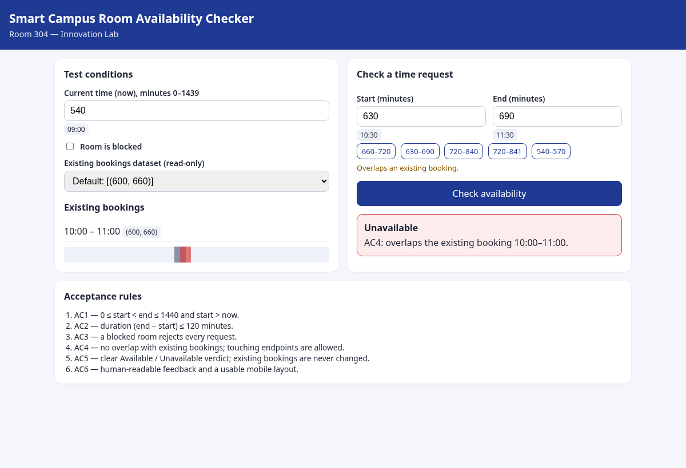
| # | Risk | Evidence | Impact |
|---|---|---|---|
| R1 | Same business rule implemented in several places | Overlap rule ×4: app.js:59 onCheck, app.js:84 updateHints, app.js:117 renderTimeline, booking.py:30. 120-min rule ×4 (app.js:51,80,119, booking.py:21). Day bounds ×4 (app.js:39,79,114, booking.py:12). | A rule change needs 4 edits; copies already disagree — renderTimeline ignores now, so a past slot is painted green while onCheck says Unavailable. |
| R2 | Rules welded to the DOM | onCheck() (app.js:24–67) reads inputs, validates and writes innerHTML in one function. | Rules cannot be unit-tested without a browser → 0 web tests, a Python copy was needed. |
| R3 | Single-room assumptions as globals | ROOM_NAME (app.js:5), DATASETS (app.js:7), mutable state.blocked/state.dataset (app.js:12–16), #room-title in index.html. | No notion of a “selected room”; a catalog would multiply globals and risk checking against another room's bookings. |
| R4 | Duplicated rendering | Result banner markup built 6× in onCheck (app.js:33–65); HH:MM formatting twice (fmt() app.js:18 and inline padStart app.js:98–99). | Inconsistent wording; each new message copies markup again. |
| R5 | Weak input contract, unenforced immutability | parseInt("660.5") silently becomes 660 (app.js:25–27); booking arrays are plain mutable arrays (app.js:7–10). | JS and Python behave differently for non-integers; AC5 relies on discipline only. |
domain/time.js, domain/availability.js) with ONE implementation of AC1–AC4; port the 22 Python cases to JS; remove the Python duplicate. (R1, R2, R5)ui/render.js): one result renderer, one HH:MM formatter. (R4)data/rooms.js as a deep-frozen catalog. (R3, R5) → re-run characterization test (must stay 12/12).domain/filters.js (F1, F2) + room selection UI (F3–F5) on top of the clean modules.node:test, a single dev dependency (playwright-core) driving the system Chromium.src/data/rooms.js, deep-frozen)| ID | Name | Capacity | Equipment | Blocked | Own bookings [start, end) |
|---|---|---|---|---|---|
| R304 | Room 304 — Innovation Lab | 24 | projector, whiteboard, smart board | no | 600–660 (A3 default dataset) |
| R101 | Room 101 — Lecture Hall | 120 | projector, microphone, video conferencing | no | 480–600, 780–840 |
| R210 | Room 210 — Seminar Room | 16 | whiteboard, video conferencing | no | 600–660, 780–840 (A3 multi dataset) |
| R415 | Room 415 — Computer Lab | 30 | projector, whiteboard, computers | yes | — (blocked although free → tests F3) |
| R112 | Room 112 — Huddle Room | 6 | whiteboard, video conferencing | no | — |
Fixed current time DEFAULT_NOW = 540 (09:00), still editable on the page so AC1 can be demonstrated. The A3 “blocked” toggle and “dataset” selector were replaced by real per-room data: blocking is now a property of Room 415, the multi-booking dataset belongs to Room 210.
| Rule | Implementation | Where |
|---|---|---|
| F1 | room.capacity >= attendees; attendees must be a whole number ≥ 1, otherwise an inline error and no matches | domain/filters.js roomMatches(), requirementsError() |
| F2 | equipment.every(item => room.equipment.includes(item)) — ALL selected items; required items are highlighted on each card | domain/filters.js, ui/render.js roomCardHTML() |
| F3 | checkAvailability() returns Unavailable (AC3) first for room.blocked; cards show “Blocked”, never “Open” | domain/availability.js, roomCardHTML() |
| F4 | “No rooms match these requirements” + explanation built from the active filters + Clear filters; Check button disabled | emptyStateText(), ui/app.js renderRooms() |
| F5 | Clicking another room (or a filter removing the selected room) re-runs the check for the new room's own bookings; banner says “Result for <room> · re-checked after the room changed” | ui/app.js selectRoom(), single render() |
| AC1–AC6 | Unchanged rule order: AC3 → AC1 → AC2 → AC4, one implementation, verdict object {available, rule, message, conflict} | domain/availability.js |
node scripts/screenshots.js)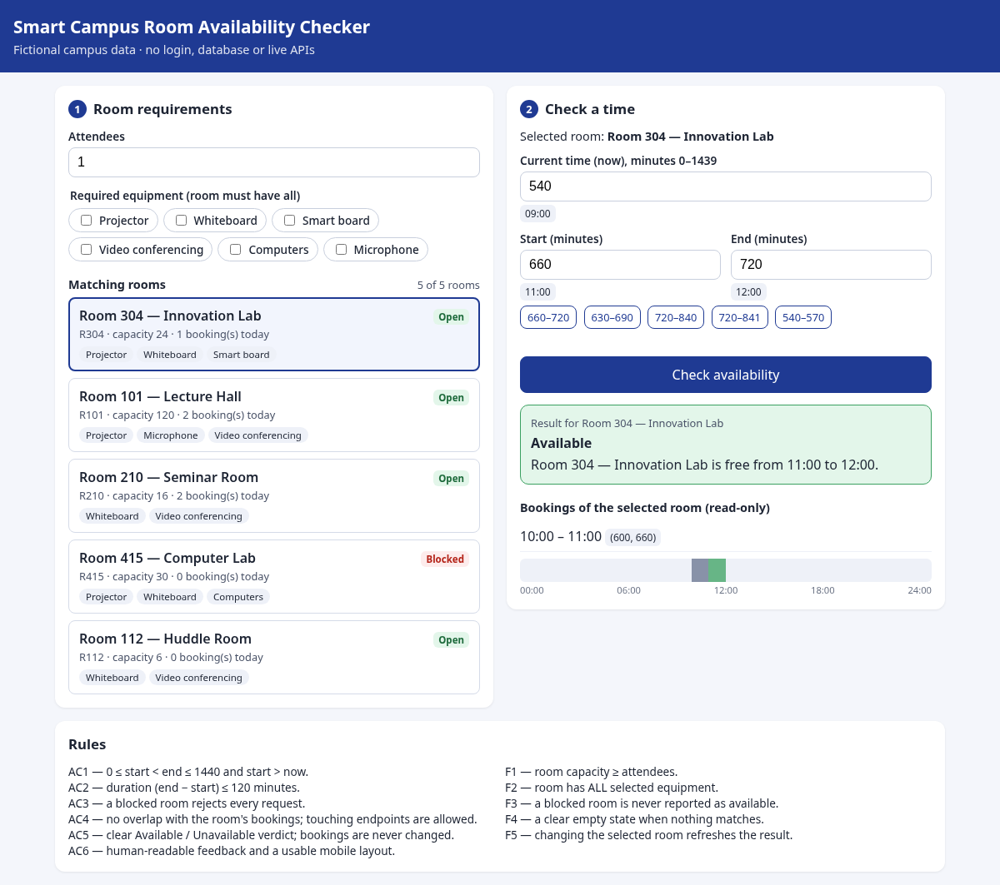
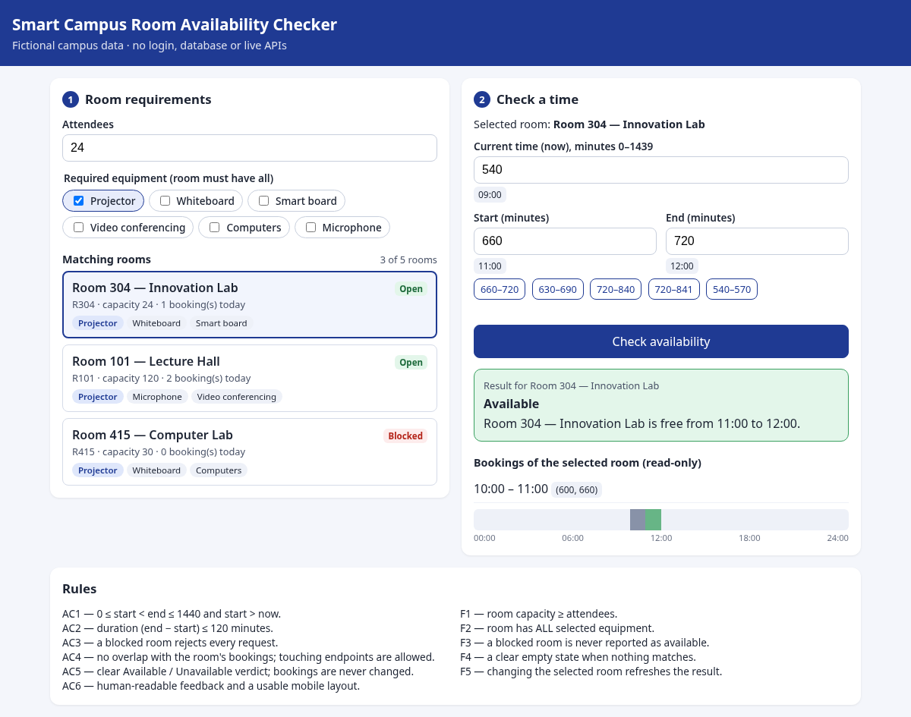
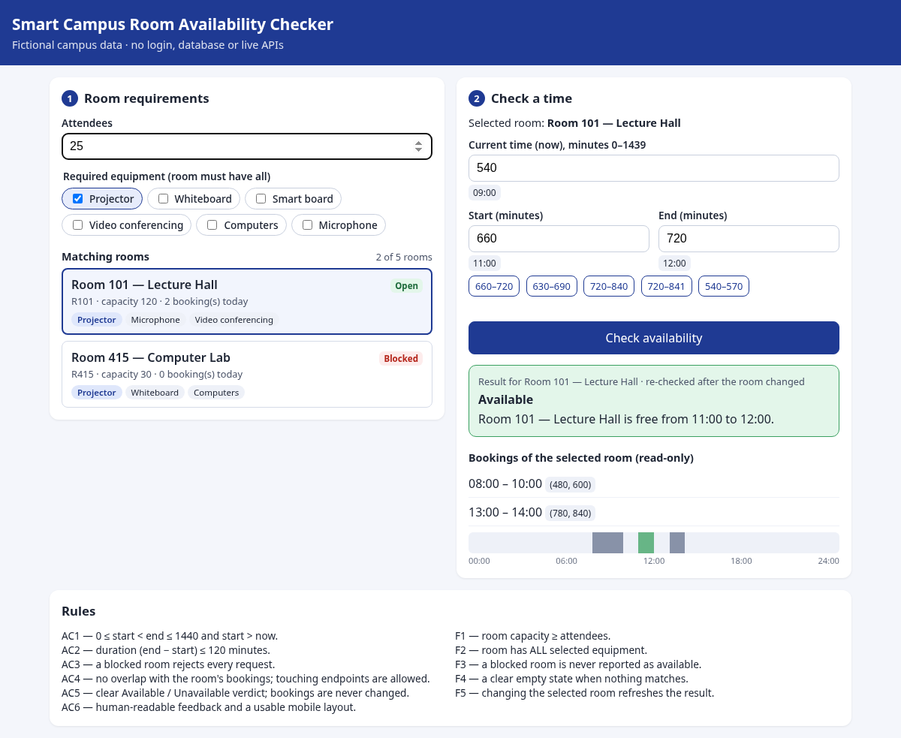
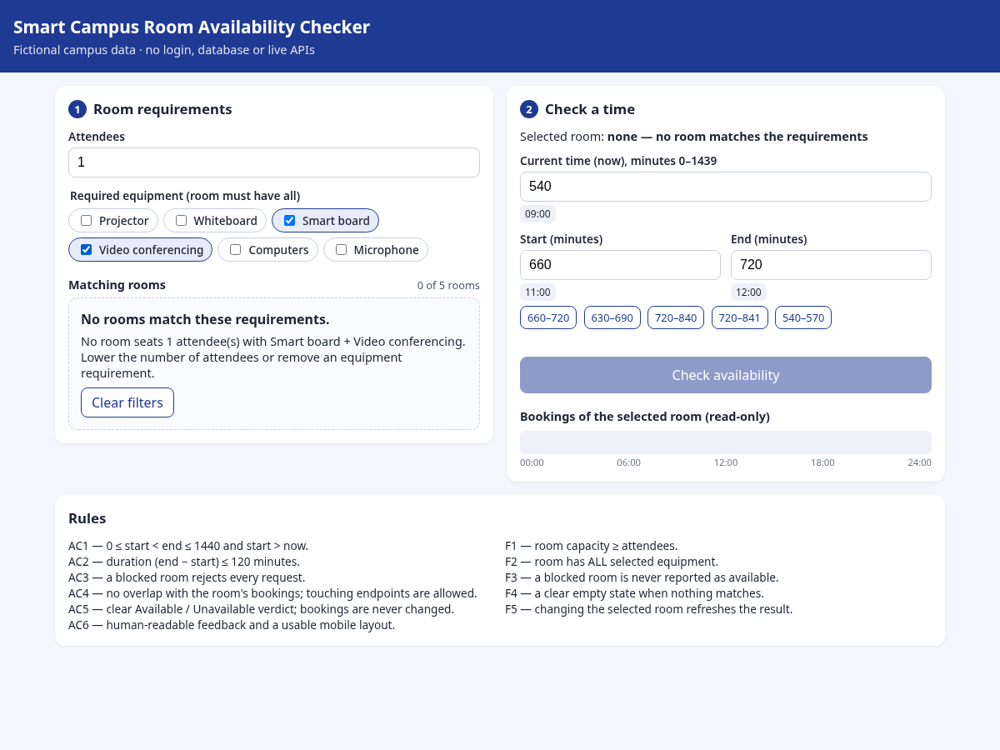
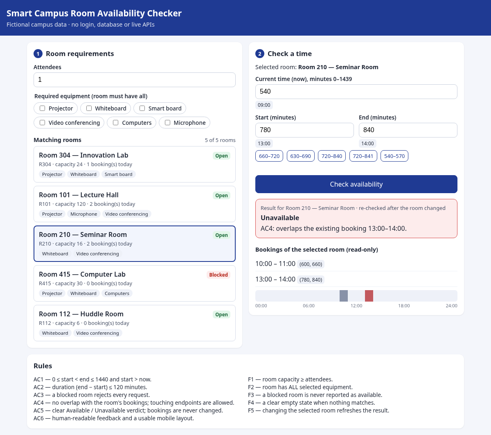
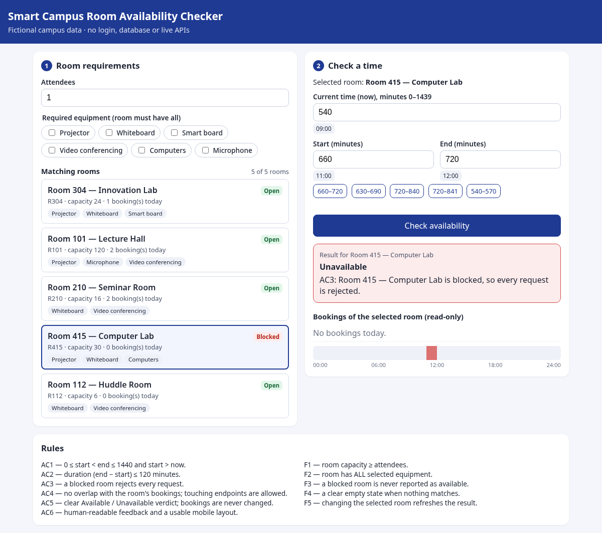
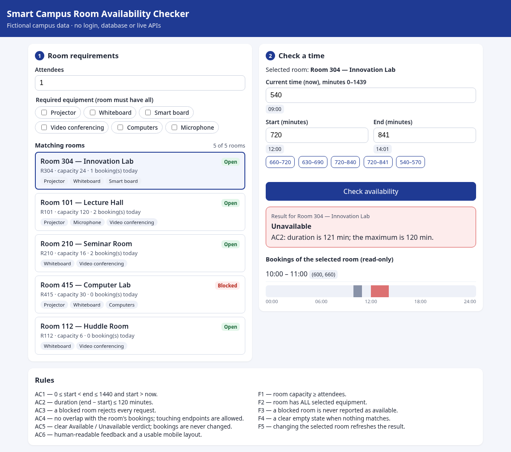
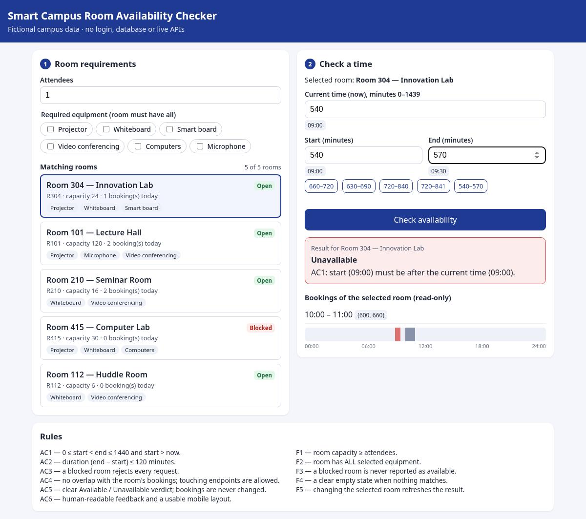
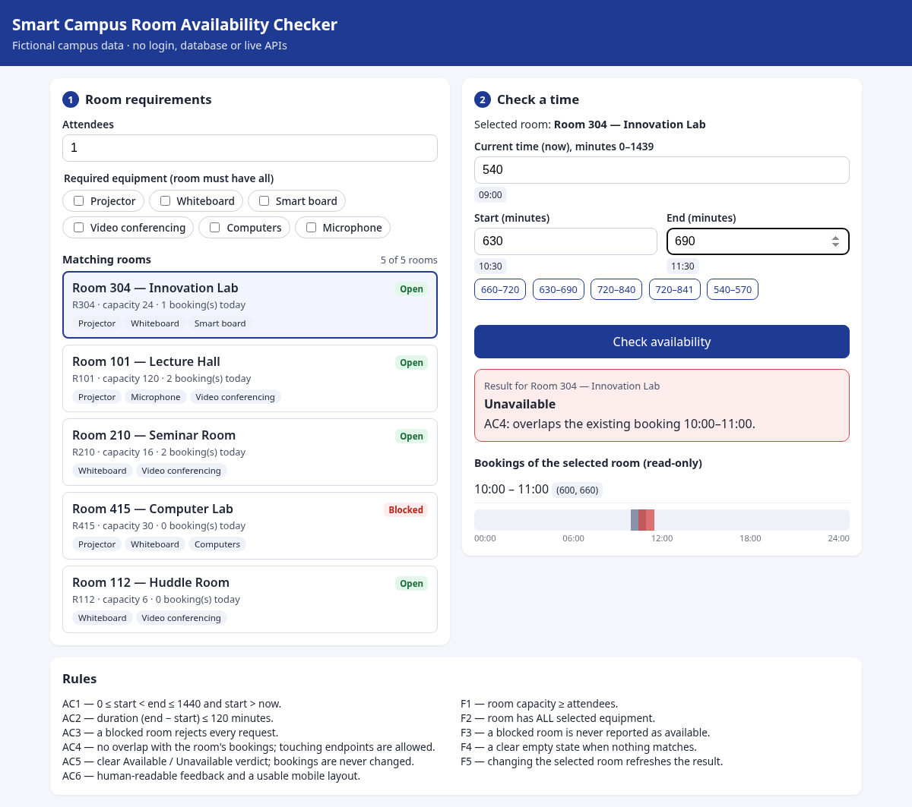
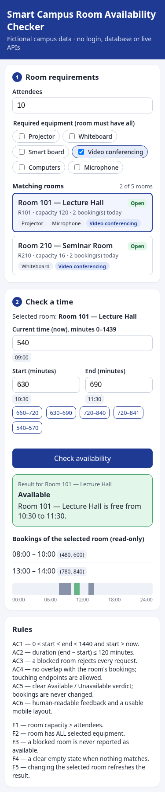
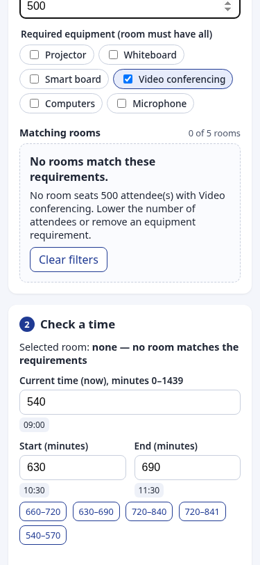
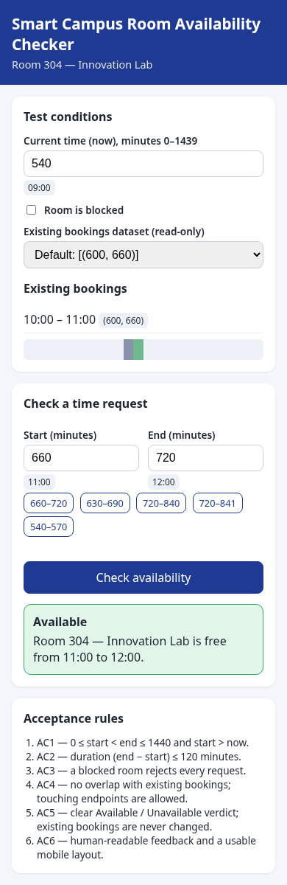
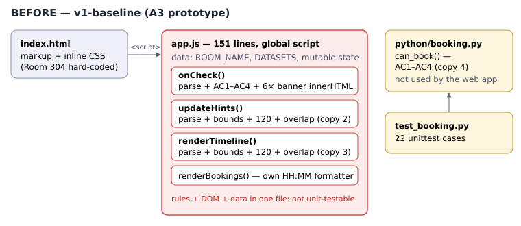
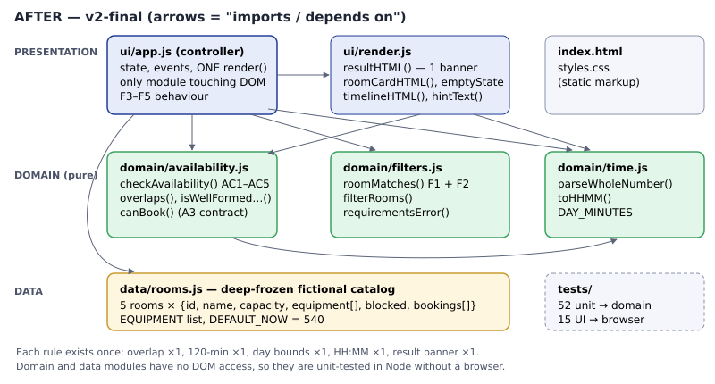
ui/app.js touches the DOM; domain and data are pure and unit-tested in Node.| Module | Responsibility | Lines | DOM access |
|---|---|---|---|
src/data/rooms.js | Fictional room catalog, equipment list, DEFAULT_NOW, deepFreeze(), findRoom() | 65 | none |
src/domain/time.js | parseWholeNumber(), toHHMM(), DAY_MINUTES | 15 | none |
src/domain/availability.js | Booking/availability rules AC1–AC5: checkAvailability(), overlaps(), isWellFormedInterval(), canBook() (A3 contract) | 50 | none |
src/domain/filters.js | Filtering F1–F2: roomMatches(), filterRooms(), requirementsError() | 17 | none |
src/ui/render.js | Pure presentation: result banner, room cards, empty-state text, bookings list, timeline, hint | 70 | none (returns strings) |
src/ui/app.js | Controller: state, event wiring, a single render() path | 116 | only here |
| Logic | Before (copies) | After | Now lives in |
|---|---|---|---|
| Overlap rule (AC4) | 4 — app.js:59, 84, 117, booking.py:30 | 1 | overlaps() |
| 120-minute rule (AC2) | 4 — app.js:51, 80, 119, booking.py:21 | 1 | checkAvailability() + MAX_DURATION |
| Day-bounds / interval shape (AC1) | 4 — app.js:39, 79, 114, booking.py:12 | 1 | isWellFormedInterval() |
| HH:MM formatting | 2 — fmt(), inline padStart | 1 | toHHMM() |
| Result-banner markup | 6 — six banner.innerHTML branches | 1 | resultHTML() |
Counted with grep on both versions (commands in §5). Instead of the six banner branches and three separate rule copies, the controller makes one checkAvailability() call per render, and that verdict feeds the hint, the timeline colour and the banner.
The refactor was done in a separate commit (v1.1-refactor) before any feature work. The same characterization test was run on both versions:
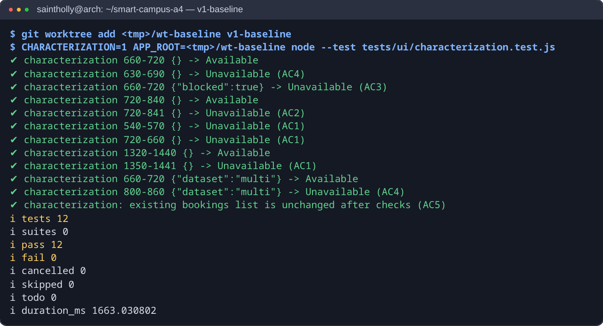
v1-baseline: 12/12.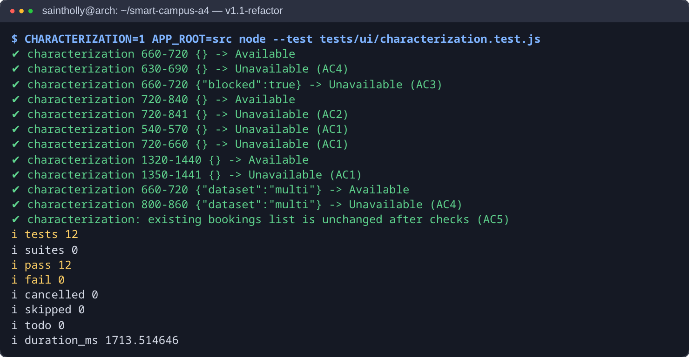
v1.1-refactor): 12/12.In addition, all 22 A3 Python cases were ported 1:1 to tests/unit/a3-regression.test.js and pass against the new canBook() wrapper. Two intentional differences, both on invalid input only: non-integer minutes such as 660.5 are now rejected (AC1) instead of being truncated by parseInt (this matches the A3 Python type guard), and the timeline colour now also respects now (the baseline painted past slots green).
checkAvailability(request, room, now) returns {available, rule, message, conflict}. Why: AC6 needs to explain which rule failed, and the banner, the live hint and the timeline must agree. With a boolean, each view re-derived the reason itself — exactly how three copies appeared in the baseline. One verdict object removes that reason to duplicate, and because the function is DOM-free it is tested in Node in milliseconds (52 unit tests). The A3 contract is kept as a thin canBook() wrapper so old regression cases still run.blocked flag and bookings) instead of reading globals. Why: it makes “the availability check must use the chosen room's bookings” true by construction (tested in “Room isolation”), and Object.freeze turns AC5 from a convention into a guarantee — an accidental push throws a TypeError (tested).render() path derived from state. Every event (filter change, room click, time input, Check) calls the same render(), which recomputes the matching rooms, fixes the selection and redraws the result. Why: F5 bugs come from forgetting to refresh one view; with a single path a stale result is impossible. The mutation check (§4.5) confirms F5 is protected by a test.can_book was a fourth copy of the rules not used by the web app, so its cases were ported and the file deleted.| File | Tests | Type | Covers |
|---|---|---|---|
tests/unit/a3-regression.test.js | 22 | unit | All 22 Assignment #03 cases (AC1–AC5) ported 1:1 |
tests/unit/availability.test.js | 17 | unit | AC1–AC5 on the room API, boundaries, room isolation, immutability |
tests/unit/filters.test.js | 11 | unit | Catalog integrity, F1, F2, F3 |
tests/unit/time.test.js | 2 | unit | Strict parsing, HH:MM formatting |
tests/ui/app.test.js | 15 | UI / integration (Playwright, headless Chromium) | AC regression through the UI, F1–F5, AC6 mobile |
tests/characterization/… | 12 | UI golden master | Single-room versions only (run explicitly, not part of the 67) |
| Boundary | Pass case | Fail case | Tests |
|---|---|---|---|
| Duration 120 vs 121 min (AC2) | 720–840 → Available | 720–841 → Unavailable AC2 | unit “exactly 120…”, “121 minutes…”; A3 test_4/test_5; UI 720–840 / 720–841 |
| Touching vs overlapping (AC4) | 660–720 and 570–600 next to 600–660 → Available | 659–720 (1 min overlap), 630–690 → Unavailable AC4 | unit AC4 group (5 tests); A3 test_1/2/9/10; UI 660–720 / 630–690 |
| Exact vs insufficient capacity (F1) | 24 attendees → R304 (cap 24) included | 25 attendees → R304 excluded | unit F1 “exact capacity…”, “insufficient…”; UI “capacity boundary…” |
| Start vs now (AC1) | 541–570 → Available | 540–570 → Unavailable AC1 | unit AC1 group; A3 test_6/test_12; UI 540–570 |
| Day end (AC1) | 1380–1440 → Available | 1380–1441 → Unavailable AC1 | unit “day bounds…”; A3 test_15/test_16 |
| Req. | Unit tests | UI / integration tests |
|---|---|---|
| AC1 | starts at now; one minute after now; reversed & zero-length; day bounds; non-integer minutes | 540–570 → Unavailable (AC1) |
| AC2 | exactly 120 available; 121 rejected | 720–840 Available; 720–841 Unavailable (AC2) |
| AC3 | blocked room rejects a free slot | Room 415 → Unavailable (AC3) |
| AC4 | touching end/start; 1-minute overlap names conflict; partial overlap; overlaps() symmetric | 660–720 Available; 630–690 Unavailable (AC4) |
| AC5 | strict boolean + message; catalog deep-frozen and unchanged after ≈125 checks; A3 test_21/22 | bookings list unchanged after checks |
| AC6 | — | 375 px: no horizontal scroll, result inside viewport; messages name the rule |
| F1 | exact (24) vs insufficient (25); whole catalog for 1; invalid counts (0, −3, 2.5, NaN) | 24 + projector → 3 rooms; 25 removes Room 304 |
| F2 | projector + computers → R415 only; partial equipment excluded; 20 + video-conf → R101 | 24 + projector list |
| F3 | R415 Unavailable for every 60-min slot (30-min steps) of the day; blocked rooms still listed | “Blocked” status + AC3 result |
| F4 | empty result for smart board + video-conf | 200 attendees → empty state, Check disabled; Clear filters recovers |
| F5 | room isolation: 780–840 R304 vs R210; 630–690 R304 vs R112 | switch R304 → R210 re-checks to AC4; filter removing selected room re-checks for the new one |
$ npm install # added 1 package (playwright-core 1.56.1) $ npm run test:unit # node --test tests/unit/ → tests 52, pass 52, fail 0 $ npm run test:ui # node --test tests/ui/ → tests 15, pass 15, fail 0 $ npm test # node --test tests/ → tests 67, suites 17, pass 67, fail 0
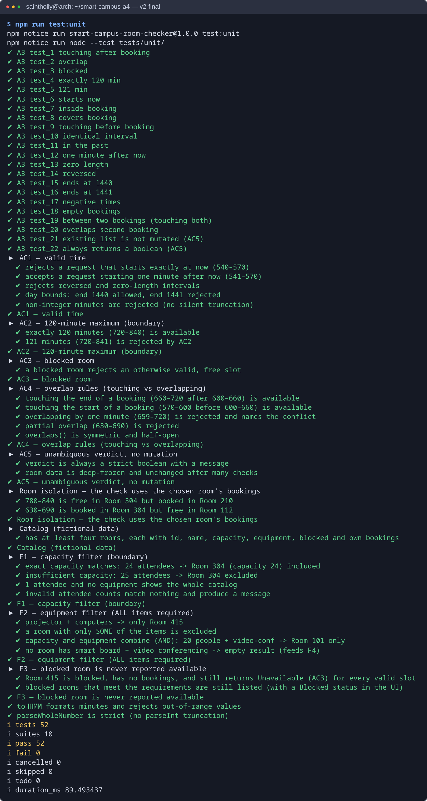
npm run test:unit: 52/52 passed.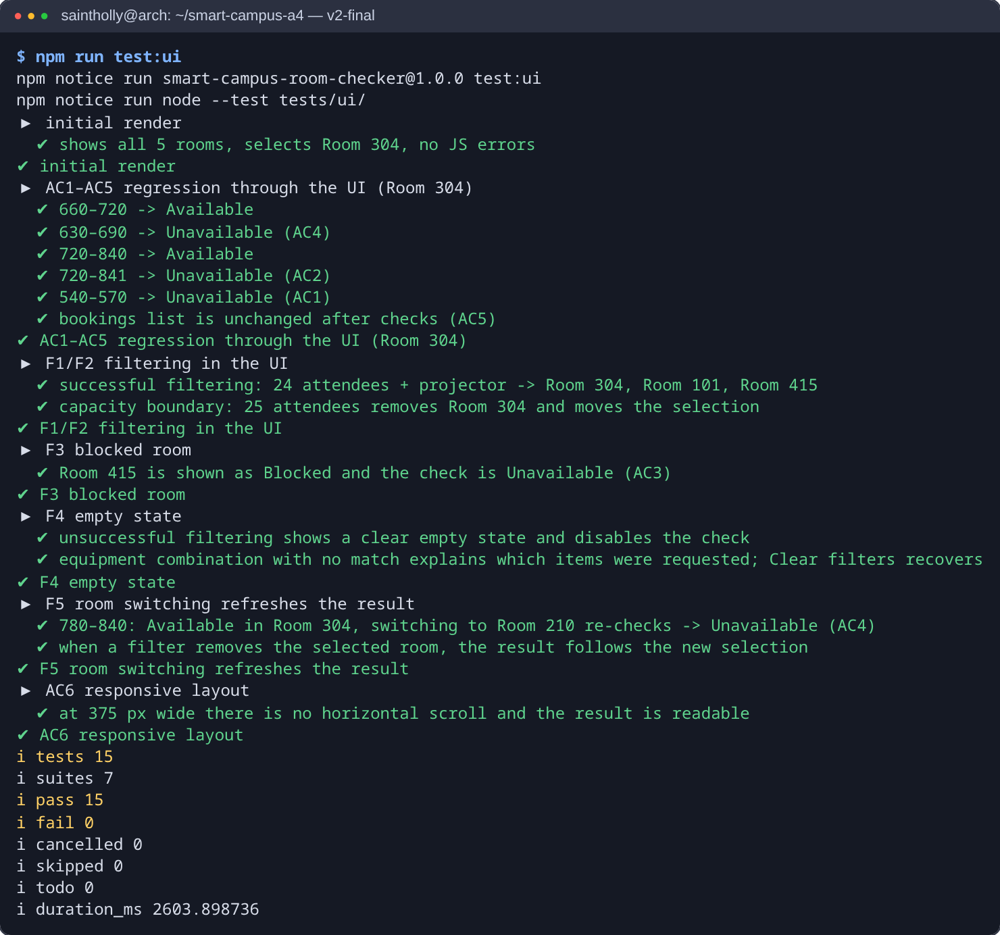
npm run test:ui: 15/15 passed (headless Chromium). Below: npm test summary 67/67.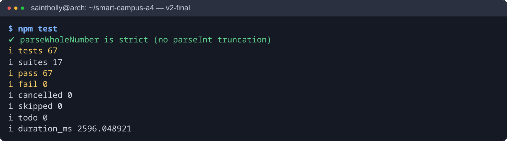
The first execution of the new suite reported 59 pass / 8 fail. All 8 failures were UI tests that read the result with Playwright's textContent, which concatenates block elements without spaces (“Innovation LabUnavailableAC1: …”), so the regular expressions did not match although the application showed the correct verdict. I fixed the test helper (switched to innerText, which respects layout), not the application, and re-ran: 67/67.
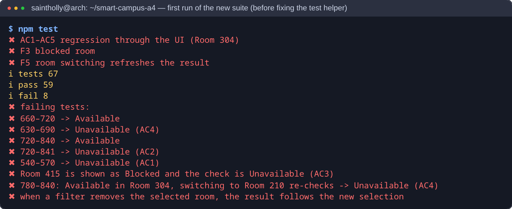
docs/evidence/first-run-failures.txt).Each defect below was injected alone with sed, the whole suite was run, and the file was restored with git checkout (docs/evidence/mutation-check.md). 9 of 9 injected defects were detected.
| Injected defect | File | npm test result | First failing test |
|---|---|---|---|
| AC4 touching treated as overlap (< → <=) | availability.js | pass 60 / fail 7 | AC1–AC5 regression through the UI |
| AC2 limit off-by-one (> → >=) | availability.js | pass 64 / fail 3 | AC1–AC5 regression through the UI |
| AC1 allows start == now (<= → <) | availability.js | pass 64 / fail 3 | AC1–AC5 regression through the UI |
| AC3/F3 blocked check removed | availability.js | pass 63 / fail 4 | F3 blocked room |
| F1 capacity strict (>= → >) | filters.js | pass 64 / fail 3 | F1/F2 filtering in the UI |
| F2 ANY instead of ALL (every → some) | filters.js | pass 49 / fail 18 | initial render |
| F5 result not refreshed on room change | ui/app.js | pass 66 / fail 1 | F5 room switching refreshes the result |
| F4 empty state never shown | ui/app.js | pass 65 / fail 2 | F4 empty state |
| AC5 data no longer frozen | data/rooms.js | pass 66 / fail 1 | AC5 — unambiguous verdict, no mutation |
| Measure | Original (v1-baseline) | Final (v2-final) | How it was obtained |
|---|---|---|---|
| Automated tests passed / total | 22 / 22 Python unit tests (only for booking.py, not for the web app).Web app: 0 automated tests. | 67 / 67 (52 unit + 15 browser UI). Plus characterization 12/12 on the single-room versions. | Executed: python3 -m unittest -v test_booking on a worktree of v1-baseline; npm test on v2-final. Raw logs in docs/evidence/. |
| Tests covering the code that ships | 0 (Python copy was never used by the page) | 67 — unit tests import the same modules the page imports | Import graph: tests/unit/* import src/domain/*, src/data/*. |
| Duplicated logic locations | 20 copies of 5 pieces of logic (overlap 4, 120-min 4, day bounds 4, HH:MM 2, banner 6) → 15 redundant copies | 5 pieces × 1 copy → 0 redundant copies 15 duplicated locations removed | grep -nE for each rule on both versions (baseline-measurements.txt, final-measurements.txt). Redundant = copies − 1. |
| Code structure | 1 global script (app.js, 151 lines, 5 functions mixing data + rules + DOM) + separate Python module | 6 ES modules in 3 layers: data (1), domain (3), UI (2). 5 of 6 modules have no DOM access; DOM only in ui/app.js | wc -l; grep -c 'document\.' per module; see §3.2. |
| Rooms supported | 1 (hard-coded) | 5 (data-driven catalog, deep-frozen) | ROOMS.length, catalog test. |
| Defect detection | not measured (no web tests) | 9 / 9 injected defects caught | Manual mutation check, §4.5. |
| Source size | 257 lines (html 106 + js 151) + 33 Python | 492 lines (html 93, css 66, js 333) | wc -l. Grew because of the new feature (catalog, filters, empty state) — not a quality metric by itself. |
Numbers were not estimated: every value comes from a command whose output is stored in docs/evidence/ (baseline-measurements.txt, final-measurements.txt, npm-test-final.txt, python-baseline-tests.txt, characterization-*.txt, mutation-check.md).
grep -nE 'start < (b|existing)|start < b_end' app.js python/booking.py # overlap → 4 hits (baseline) grep -nE '> *120' app.js python/booking.py # 120 rule → 4 hits (baseline) grep -nE 'start < 0|0 <= start|end > 1440|end <= 1440' app.js python/booking.py # bounds → 4 code hits (baseline) grep -nc 'banner.innerHTML' app.js # banner → 6 (baseline) grep -rnE '\.start < [a-z.]*end && [a-z.]*end > [a-z.]*start' src # overlap → 1 (final) grep -rnE '> *(120|MAX_DURATION)' src # 120 rule → 1 (final) grep -rnE 'end > DAY_MINUTES|end <= DAY_MINUTES|end > 1440' src # bounds → 1 (final)
The measurement also changed the code: the first “final” measurement still found the day-bounds rule copied in ui/render.js (timeline). It was extracted into isWellFormedInterval() (commit 32977cb) and re-measured.
button role="radio" inside a radiogroup, but arrow-key navigation is not implemented, and no automated accessibility audit (e.g. axe) is run.What context did I provide? I gave Claude Code a short repository map (four files with their roles and sizes), the six original acceptance criteria, the new rules F1–F5, and the constraints: fictional data, a fixed current time, no login, database or live APIs, and small steps instead of a rewrite. I asked for a risk analysis and a plan before any code was edited.
Which suggestions were useful or incorrect? Useful: splitting the code into data, domain and UI modules; returning a verdict object (rule + message) instead of a bare boolean, so the banner, hint and timeline share one decision; deep-freezing the catalog to enforce AC5; and writing a characterization test before refactoring. Incorrect or unsuitable: rebuilding the app in React, Vite and TypeScript; hiding blocked rooms; and a UI-test helper based on textContent that made eight correct tests fail. The assistant also treated de-duplication as finished, but my grep measurement still found the day-bounds rule copied in render.js.
What did I verify? I ran every command myself: the characterization test on the baseline and on the refactored version (12/12 each), the full suite (67/67), the screenshots in a real browser, and a manual mutation check in which all nine injected defects were detected.
How did tests influence decisions? The characterization test told me when a refactor was safe to commit, the 24-versus-25 tests fixed the F1 boundary, and the failing first run made me repair the test helper instead of the application.
What next? Arrow-key navigation for the room list, an automated accessibility check, UI tests in Firefox and WebKit, and running the suite in CI.
The work was done in an agentic CLI environment (Claude Code) with minimal permissions: access limited to the project folder, no credentials or private data shared, no network calls from the app, and the only installed package was playwright-core. No new SKILL.md was created.
Tool / model: Claude Code (Anthropic), model Claude Opus 5.5 · Date: 2026-11-07 · Mode: terminal agent; reads files, runs shell commands, edits files in smart-campus-a4/; every change reviewed as a Git diff and committed in small steps.
| # | Prompt summary | Output used | Problems found | Changes made (human decision) | Verification source |
|---|---|---|---|---|---|
| 1 | Analyse the repository (map + AC1–AC6 + F1–F5 + constraints); list ≥3 risks with references; plan; no edits. | Risks R1–R5 with line references; 7-step plan. | Plan began with a React/Vite/TS rewrite; suggested hiding blocked rooms. | Rewrite rejected (no-build ES modules); blocked rooms shown with a badge instead (§1.5). | Line references checked by grep -n (baseline-measurements.txt). |
| 2 | Write a characterization test that records the current single-room behaviour before refactoring. | single-room.characterization.js (12 cases), static server, Playwright harness. | — | Kept; made opt-in via CHARACTERIZATION=1. | 12/12 on v1-baseline. |
| 3 | Extract pure modules (time, availability, data, render, controller) with no behaviour change; port the Python tests. | Modules of v1.1-refactor; 22 ported cases. | Strict parser changes behaviour for non-integer input. | Accepted as an intentional fix (matches A3 type guard), documented in §3.4. | Characterization 12/12 before and after; ported tests 22/22. |
| 4 | Add ≥4 fictional rooms, capacity + equipment filters and room selection (F1–F5) on top of the modules. | Catalog, filters.js, room list, empty state, single render(). | The “re-checked after the room changed” note stayed visible after the user edited the times. | Note now cleared on any time input (onTimeInput). | Manual browser review; F5 UI tests. |
| 5 | Write ≥10 tests incl. AC1–AC5 regression, F1–F5, 120/121, touching/overlap, exact/insufficient capacity, ≥1 UI test. | 52 unit + 15 UI tests. | First run 8 failures caused by the test helper (textContent), not by the app. | Helper switched to innerText; Playwright timeout reduced to 5 s for fast failures. | Re-run 67/67; mutation check 9/9. |
| 6 | Measure duplication and structure on both versions with grep / wc; do not invent numbers. | Measurement commands and files. | Day-bounds rule still duplicated in render.js although the refactor was reported as complete. | Extracted isWellFormedInterval() (commit 32977cb). | Re-measured: 1 copy; 67/67 tests. |
P1 "Here is the repository map, AC1–AC6, F1–F5 and the constraints. Read app.js and python/booking.py.
List at least three maintainability risks with file/function references, then propose a
prioritised, small-step improvement plan. Do not edit code yet."
P3 "Refactor the single-room app into src/domain (time, availability), src/data and src/ui (render,
app). Behaviour must not change: the characterization test has to stay 12/12. Port the 22
python/test_booking.py cases to node:test and remove the Python duplicate."
P5 "Add tests: AC1–AC5 regression, F1–F5, boundaries 120 vs 121, touching vs overlapping,
exact vs insufficient capacity, and at least one browser UI test. Show me the real output."
Requirements: Node.js ≥ 20 (tested v26.10.0); a Chromium/Chrome binary for UI tests (auto-detected: /usr/bin/chromium, /usr/bin/chromium-browser, /usr/bin/google-chrome, or set CHROMIUM_PATH=/path/to/chrome) npm install # installs the only dev dependency: playwright-core (no browser download) npm start # serves the repo on http://127.0.0.1:8080 -> open http://127.0.0.1:8080/src/ npm test # all 67 tests (node --test tests/) npm run test:unit # 52 unit tests (domain + data, no browser) npm run test:ui # 15 Playwright UI/integration tests (headless Chromium) node scripts/screenshots.js # regenerates docs/screenshots/*.png # characterization test on the single-room versions git worktree add ../baseline v1-baseline CHARACTERIZATION=1 APP_ROOT=../baseline node --test tests/characterization/single-room.characterization.js git checkout v1.1-refactor CHARACTERIZATION=1 APP_ROOT=src node --test tests/characterization/single-room.characterization.js
The app is plain HTML + ES modules (no build step). Browsers block ES modules on file://, so open it through npm start or any static server.
smart-campus-a4/ ├─ src/ index.html, styles.css │ ├─ data/rooms.js fictional deep-frozen catalog │ ├─ domain/time.js parseWholeNumber, toHHMM │ ├─ domain/availability.js AC1–AC5 │ ├─ domain/filters.js F1–F2 │ ├─ ui/render.js pure HTML builders │ └─ ui/app.js controller ├─ tests/ unit/ (52) · ui/ (15) · characterization/ (12, single-room versions) ├─ scripts/ serve.js · screenshots.js └─ docs/ 01-codebase-analysis.md · diagrams/ · screenshots/ · evidence/ · report/
1377dae (tag: v2-final) docs: README, diagrams, screenshots, evidence logs; fail-fast UI harness 32977cb refactor: single isWellFormedInterval() shared by domain and timeline 8051a67 test: AC1-AC5 regression, F1-F5, boundaries and Playwright UI tests (67 tests) 7565158 feat: room catalog (5 fictional rooms) with capacity/equipment filters (F1-F5) 35b170f (tag: v1.1-refactor) refactor: split single-room app into data/domain/ui modules (no behaviour change) 3d589f2 test: characterization UI test + Task 1 codebase analysis 27167e1 (tag: v1-baseline) baseline: A3 single-room prototype (Room 304) + Python can_book reference
Each step is one reviewed commit; tests were run after every step (workflow: baseline → plan → one change at a time → test → review diff → document).
src/domain/availability.js%%availability%%
src/domain/filters.js%%filters%%
src/domain/time.js%%time%%
src/ui/app.js (controller)%%app%%